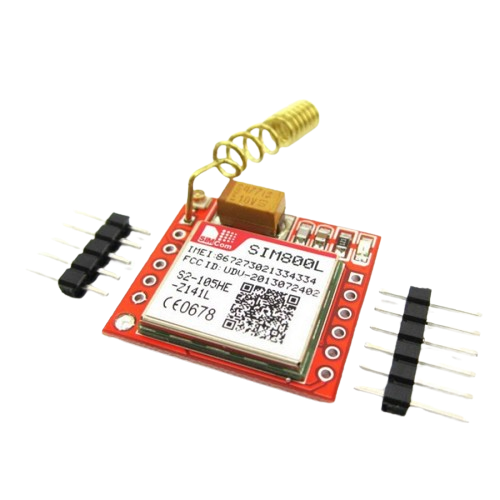
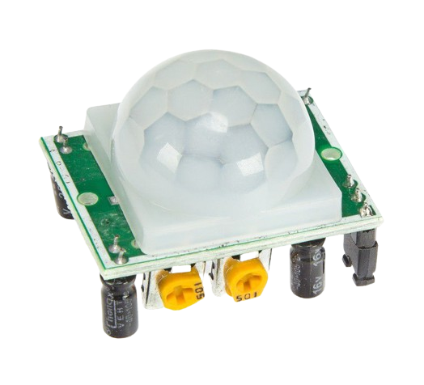

Major IoT devices Used

SIM-800L

Arduino UNO

An intrusion alarm system is a system whose aim is to monitor and detect unauthorized access to a building. These systems are used for different purposes and in different contexts both residential or commercial. The main purpose of an intrusion alarm system is to protect from burglary, vandalism, property damage, and, of course, the security of the individuals inside the building.
Why do we need Intruder safety Alarm
Your home is your safe place. Whether you’re there or not, you should feel secure in the fact that it’s protected from intruders and that the people you love are out of harm’s way. A home security system that has alarm monitoring, is the best way to keep your house safe. In fact, according to a University of North Carolina report referenced by Angie’s List, about 83 percent of the burglars would try to find out if the home had a security alarm before attempting to break in, 50% of the burglars interviewed said they would stop breaking into the home if they found an intruder detection alarm, and an additional 31 percent said they might retreat. Only 13 percent said they would continue with the break-in if they found a security alarm.Feeling vulnerable in your own home? This project empowers you to create a silent guardian – an IoT-based intruder alarm built with Arduino. Forget noisy sirens that alert intruders. This system discreetly notifies you or the authorities when a breach occurs, allowing for a swift and silent response. Imagine strategically placed sensors that detect movement, triggering an alert on your phone or sending a notification to designated contacts. This project equips you to take back control, transforming your space into a safe haven without tipping off potential intruders. Let's build peace of mind, one silent alarm at a time.
Major IoT devices Used
Uniqueness
Integrate a siren or loud buzzer that activates when motion is detected such as breach, like a door being opened or motion being sensed , and the system is armed and this can help detect intruders and alert nearby occupants or neighbors to the potential threat. If you're home during an intrusion, the siren's loud noise immediately notifies you of a potential threat. This allows you to take appropriate action, such as calling the police or hiding in a safe location.


Incorporate a camera module (such as a webcam or an IP camera) into the system to capture images or videos when motion is detected. We can then send these images or videos along with the notification to provide visual verification of the event.
Implementing a feature that allows us to remotely arm and disarm the security system using SMS commands sent to the Arduino via the GSM module. This can be useful for enabling or disabling the system when you're away from home.


Final Program Code
#include
Copied!
TEAM MEMBERS